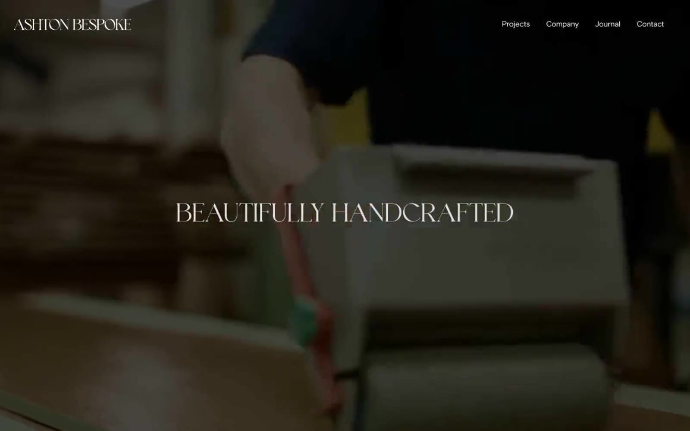

Ashton Bespoke 的 Design.md 主题展示，围绕高级质感、浅色界面、编辑/机构组织页面。
Explore Ashton Bespoke's light Design design system: Stone Canvas #e0ded8, Midnight Ink #262626 colors, Arial, Legquinne Vf typography, and DESIGN.md for AI...

#e0ded8: #e0ded8#262626: #262626#38141b: #38141b#ffffff: #ffffff#000000: #000000#f6f6f6: #f6f6f6#2e2e20: #2e2e20#c9c9c9: #c9c9c9#060daa: #060daa#191817: #191817#fcfaee: #fcfaee#555555: #555555display: Interbody: Intermono: ui-monospacehints: Inter,ui-monospace